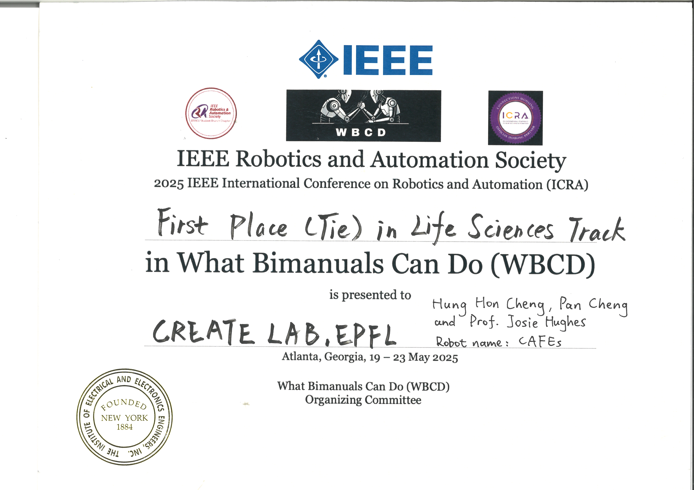
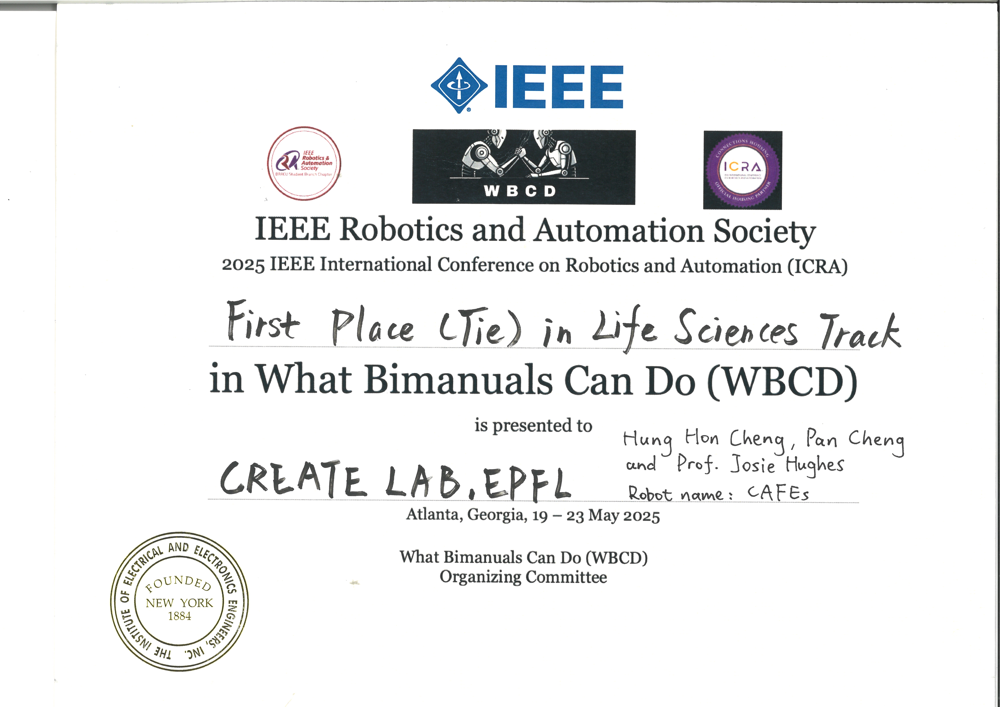

Cheng Pan
Ph.D. Candidate, Machine Learning & Robotic Manipulation
EPFL
Email: cheng.pan [at] epfl [dot] ch
Ph.D. Candidate, Machine Learning & Robotic Manipulation
EPFL
Email: cheng.pan [at] epfl [dot] ch
I am a PhD student at École Polytechnique Fédérale de Lausanne (EPFL) , advised by Josie Hughes. I conduct research in AI and robotics.
I received my Master's degree from Technical University of Munich (TUM), where I was advised by Prof. Matthias Althoff. My bachelor's degree is from Shanghai University.
 
